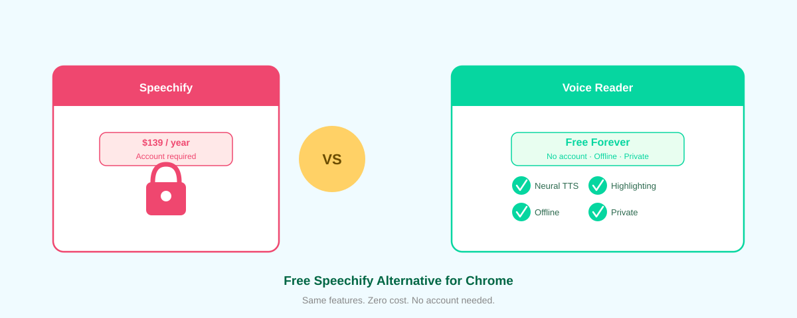

The Best Free Alternative to Speechify for Chrome — No Subscription Required

Speechify costs $139 per year. You need an account. It uploads your data to the cloud. And you still hit paywalls on the best voices.
Voice Reader does everything Speechify does—and more—for $0. Forever.
Why Voice Reader Beats Speechify
1. No Subscription. Ever.
Speechify's "premium" voices, PDF support, and focus mode all cost extra. Voice Reader gives you everything—for free. Install once, use forever, no account, no surprise bills. The extension is open-source on GitHub, so you can audit the code yourself.
2. Works Fully Offline
Voice Reader uses Piper neural TTS running in WebAssembly right in your browser. Your text never leaves your device. Speechify sends your content to cloud servers, which means slower processing, privacy risks, and the need for an internet connection.
3. Zero Data Collection
We send zero telemetry. No analytics. No user tracking. No "anonymous" metrics that follow your reading habits. Your data stays yours—because it never leaves your browser.
4. Neural Voices That Sound Natural
Voice Reader's voices are powered by Piper VITS, the same neural TTS engine that powers commercial services. Choose from 50+ voices across 20+ languages. The voices are indistinguishable from Speechify's premium tier—without the premium price tag.
5. Word Highlighting & Focus Mode Built In
As Voice Reader reads, it highlights each word. You control playback—pause, rewind, jump forward. Focus mode dims the rest of the page so you stay locked on the text. Speechify charges extra for these features. We included them by default.
6. Works on Any Website
Click the Voice Reader icon on any webpage, and it reads the text. Articles, emails, PDFs, comments—Voice Reader handles it all. No clunky special modes or compatibility issues.
7. One-Click Installation
Download from the Chrome Web Store and start reading in seconds. No billing info required. No signup wall. Just install and go. If you prefer, you can also load the unpacked extension directly from GitHub for full transparency.
Voice Reader vs. Speechify: Feature Breakdown
| Feature | Voice Reader | Speechify |
|---|---|---|
| Price | Free | $139/year |
| Account Required | No | Yes |
| Offline Support | Yes | No |
| Data Privacy | Local only | Cloud uploaded |
| Neural Voices | 50+ voices | Premium voices $139+ |
| Word Highlighting | Built-in | Premium add-on |
| Focus Mode | Built-in | Premium add-on |
| Web & PDF Support | Yes | Yes (premium) |
| Open Source | Yes | No |
Who Should Use Voice Reader?
- Anyone who reads online and wants a faster, more natural way to consume content
- Students who need to reduce reading fatigue
- Professionals who want to learn while commuting or multitasking
- People with dyslexia or reading difficulties who benefit from audio + visual support (Voice Reader's word-by-word highlighting is designed for accessibility)
- Privacy-conscious users who refuse to send their reading habits to cloud services
- Anyone frustrated with Speechify's paywall
How to Get Started
- Go to the Chrome Web Store and search for "Voice Reader"
- Click "Add to Chrome" and confirm
- Visit any webpage with text (article, email, social media, etc.)
- Click the Voice Reader icon in your toolbar
- Hit "Play" and listen
No account. No billing. No waiting. Start reading in seconds.
The Bottom Line
Speechify is expensive, requires an account, uploads your data, and locks core features behind paywalls. Voice Reader is the antidote: free, open-source, offline, and private. You get better features, faster performance, and complete control—with zero cost.
If you're tired of paying for a reader when a better one exists for free, install Voice Reader today.